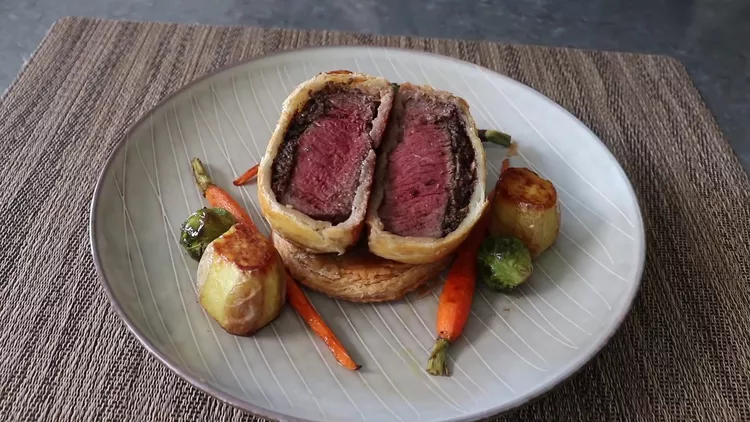

Individual Beef

Intruduccion
Enjoy these individual beef Wellingtons with no regrets and no second thoughts! Perfectly cooked filet mignon topped with a rich, savory mushroom pate is wrapped in a crispy pastry crust and served on top of a buttery pastry base for a 1-2 punch that's hard to beat. Serve as-is or with a simple, brown pan sauce.
Ingredients
For the Mushroom Dexelles
- 3 tablespoons unsalted butter
- 110 large brown mushrooms, finely chopped
- 1/4 teaspoon salt
- 2 tablespoons miced shallots
- freshly groud blaack pepper to taste
- 1 pinch caayenne pepper, or to taste
- 3 tablespoons white wine
- 2 ounces pate
Steps
- Melt butter over medium-high heat. Add mushrooms and salt
- Add shallots and cook until they soften up and turn tarnslucents, about 3 minutes
- Add pate to cooled mushroom mixture; toss and mash with a spoon until thoroughly combined. Set aside.
- Generously season filets with salt and pepper. Melt butter for Wellingtons in the same pan over high heat.
- Cut each sheet of pastry into 4 squares. Place one square frozen puff pastry onto a lightly floured surface.